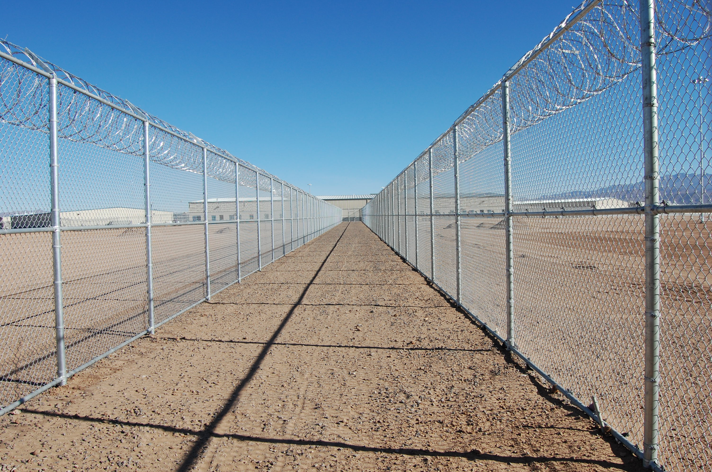
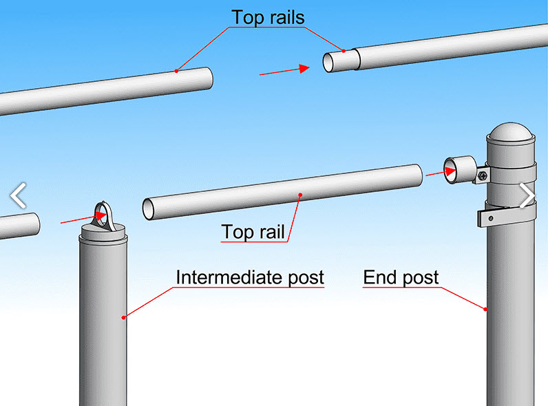

Welcome to MTM Fence Training
You're going to learn how to build chain link security fences. First, you need to know what all the parts are called.

Complete fence overview showing full installation
What is a Chain Link Security Fence?
A chain link fence is made of metal wire woven together to make a strong barrier. We add security features like barbed wire to make it even stronger.
The fence has three main jobs:
- Keep people out who shouldn't be there
- Keep people in who need to stay inside
- Last a long time in all kinds of weather
Posts - The Strong Foundation
Terminal Posts
Terminal Posts are the big, strong posts at corners and ends.
- These are like the legs of a table - they hold everything up
- They're bigger and stronger than other posts
- Gates attach to these posts
Terminal post (end post) by line post
Intermediate Posts (Line Posts)
Intermediate Posts (also called line posts) go between the terminal posts.
- These hold up the fence fabric along straight sections
- They're smaller than terminal posts
- They're spaced evenly along the fence line
Intermediate/line post clearly labeled
Chain Link Fabric - The Barrier
This is the metal mesh that makes the actual barrier.
- Made of steel wire woven in a diamond pattern
- Comes in big rolls
- Gets attached to the posts
Close-up of chain link fabric showing diamond pattern
Recently delivered chain link fabric
Chain fabric being hauled to work site
Remember:
The chain link fabric is what actually stops people from getting through. It needs to be tight and secure to do its job properly.
Hardware - The Connectors (Part 1)
These small parts hold everything together:
Tension Bars
Flat metal strips that go through the fence fabric
- Help attach fabric to terminal posts
- Make the fence tight and strong
Tension bar being inserted in fence fabric
Tension Bands
Metal straps that go around terminal posts
- Hold the tension bars in place
- Usually 5-6 bands per terminal post
Tension bands on terminal post
Hardware - The Connectors (Part 2)
Fence Ties
Wire ties that connect the chain link fabric to the top rail.
- Secure the fence fabric to the top rail
- Keep the fence tight and properly supported
- Spaced evenly along the top rail
Fence ties connecting fabric to top rail
Barbed Wire Arms
Metal brackets that go on top of posts instead of caps.
- Hold three strands of barbed wire
- Support a spool of razor wire
- Add extra security at the top of the fence
Barbed wire arms on terminal post
Top Rail & Tension Wire
Top Rail - The Top Support
Metal pipe that runs along the top of the fence.
- Gives the fence extra strength
- Keeps the top from sagging
- Connects from post to post

Top rail installation
Tension Wire - The Bottom Support
Strong wire that runs along the bottom of the fence.
- Keeps small animals from getting under
- Makes the bottom of the fence tight
- Usually about 6 inches off the ground
Tension wire at bottom of fence
How It All Works Together
Think of building a fence like building with blocks:
- Posts go in first - like setting up the frame
- Top rail connects the posts - like putting a roof on
- Fence fabric gets attached - like putting up walls
- Hardware holds it all together - like using screws and bolts
- Tension wire finishes the bottom - like putting in a floor
Step-by-step assembly diagram
Quality Standards
Quality Basics
Every fence part must be:
- Straight - Not crooked or bent
- Tight - Not loose or wobbly
- Secure - Won't come apart
- Even - Same spacing and height
Summary
Key Points to Remember:
- ✓ Terminal posts are big and strong - they go at corners and ends
- ✓ Line posts are smaller - they go in straight sections
- ✓ Chain link fabric is the mesh that makes the barrier
- ✓ Hardware connects everything together
- ✓ Top rail and tension wire add strength
- ✓ Everything must be straight, tight, secure, and even
Complete labeled fence diagram as summary
Complete fence overview showing full installation